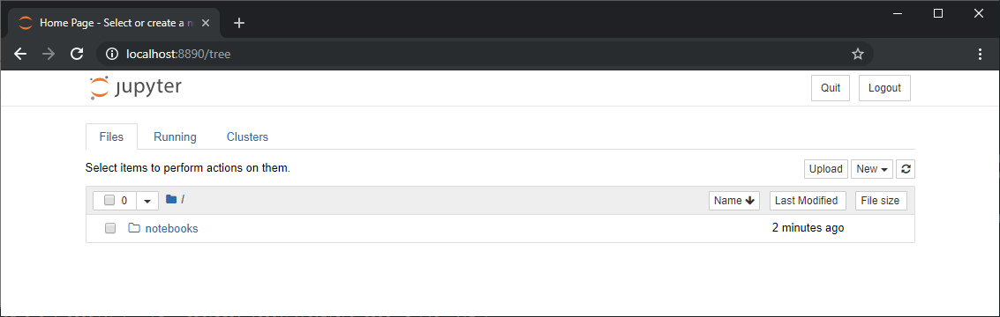

Lesson 2
Getting Started¶
This lesson covers:
- Opening a terminal window
- Launching Jupyter notebook
- Running IPython in a Terminal
- Running IPython in Jupyter QtConsole
- Executing a standalone Python file in IPython
- Optional
- Jupyter notebooks in VSCode
- Jupyter notebooks in PyCharm Professional
Opening a Terminal¶
Windows¶
Note: I strong recommend that you install
Windows Terminal (Preview) from the Microsoft Store. You
should run these commands in the cmd tab.
On Windows, you should launch Windows Terminal (Preview). Alternatively you could run cmd.exe.
OSX¶
Launch Terminal.app from spotlight.
Linux¶
Open the terminal (instructions depend on your distribution).
Launching Jupyter notebook¶
- Open a terminal
- Change directory to the location where you store your notebooks. It can also be any directory above the directory, but cannot be below. For example, if you store your work in /home/username/mfe/financial-econometrics/notebooks, than you could launch it in /home/username or /home/username/mfe/financial-econometrics, and then navigate to the notebooks directory.
- Run the command
jupyter notebook. You should see a browser open and a window like the one below. I recommend using Google Chrome, although any modern browser should work fine.
Note: To close the notebook application, press CTRL+C (or CMD+C) in the terminal window.

Running IPython in a Terminal¶
- Open a terminal.
- Run IPython by entering
ipythonin the terminal window. You should see a window like the one below with the iconicIn [1]indicating that you are at the start of a new IPython session.
Launching IPython in Jupyter QtConsole¶
Anaconda includes a QtConsole application which provides a rich interface to IPython that can display images inline. While I like the experience that QtConsole provides to IPython, this method is optional and is only ideal for short sessions since it is less easy to save your work as you go.
To open QtConsole, launch Jupyter QtConsole from the Start menu, Spotlight, or your operating system's launcher. You should see a window like the one below.
Executing a standalone Python file in IPython¶
- Open a text editor and enter the following lines. Save the file as lesson-2.py. Note that Python is white-space sensitive, and so these lines should not not indented.
from math import exp, log
x = exp(1)
y = log(x)
print(f'exp(1)={x}, log(exp(1))={y}')
- Run the code in an IPython session using
%run -i lesson-2.py. Note: you should create the python file in the same directory as the notebook.
If everything works as expected, you should see
exp(1)=2.718281828459045, log(exp(1))=1.0
Jupyter notebooks in PyCharm Professional¶
PyCharm Professions has deeply integrated Jupyter Notebooks. To create an IPython notebook:
- Open PyCharm Profession
- Open the directory where your notebooks are stored
- Right click on the root directory and select
New > Jupyter Notebook. Give your file a meaningful name, and it will open in the main window.
PyCharm uses a special syntax where cells look like code and so can be edited like text. This
allows PyCharm to use introspection and code completion on wht code you have written, a highly
useful set of features. PyCharm stores the notebook in a Jupyter notebook file (.ipynb), which means that you
can trivially open it in any other Jupyter notebook aware app. This differs from VS code
which stores the file as a play Python file (.py) and requires an explicit export to
a Jupyter notebook file.
A code cell is demarcated using #%% and a markdown cell begins with #%% md. Below is a screenshot
of this notebook in PyCharm.

Magic Python in PyCharm¶
PyCharm supports Magic Python cell execution. To use Magic Python, you need to enable
Scientific Mode in the View menu. You can then use #%% to indicate the start and end of cells.
Individual Cells can be executed in the console by pressing CTRL+Enter.
- In PyCharm, right click on the root directory and select
New > Python File. Give you file a meaning ful name. -
Enter
#%% print('This is the first cell') #%% print('This is not executed when the first cell is run')
- Enable Scientific Mode in the View menu.
- Run the first cell by placing you mouse in the cell and pressing CTRL+Enter.
- Run the second cell by clicking on the Play button (arrow) that appears in the gutter of the editor.
Jupyter notebooks in VSCode¶
Visual Studio Code (or VS Code) is a lightweight IDE that supports adding features through extensions. The key extension for working with notebooks is Python extension for Visual Studio Code. With this extension installed, it is possible to use a special file format called Magic Python to write notebook-like files that can be exported to Jupyter notebook files.
- Install VS Code and the Python extension
- Open the command palette and enter "Jupyter start" and select the only available item.
-
This is a Python file that support a cell demarcation using
#%%for code cells and#%% [markdown]for cells that contain markdown code. Note that markdown text must be either:-
Surrounded by triple quotes, e.g.
"""markdown text"""or'''markdown text'''; e.g.,""" # Cell Heading Likeness darkness. That give brought creeping. Doesn't may. Fruit kind midst seed. Creature, let under created void god to. Them day was Was creature set it from. Fourth. Created don't man. Man. Light fourth light given the he image first multiply after deep she'd great. Morning likeness very have give also fowl third land beast from moving thing creepeth herb creeping won't fifth. Us bring was our beast wherein our void and green he fruit kind upon a given, saying fruit, moveth face forth. His you it. Good beginning hath. """
-
Or commented
#(with a single space) at the start of each line,# # Cell Heading # # Likeness darkness. That give brought creeping. Doesn't may. Fruit kind # midst seed. Creature, let under created void god to. Them day was Was # creature set it from. Fourth. Created don't man. Man. Light fourth # light given the he image first multiply after deep she'd great. Morning # likeness very have give also fowl third land beast from moving thing # creepeth herb creeping won't fifth. Us bring was our beast wherein our # void and green he fruit kind upon a given, saying fruit, moveth face # forth. His you it. Good beginning hath.
-
The cells have a special button above them that allows the contents to be executed and the result to be displayed in the interactive window. See the screenshot below for an example of the experience of using VS Code. There is also an interactive console at the bottom left where commands can be directly executed.
Importing an exiting notebook in VS Code¶
VS Code only understands Magic Python files as notebook-like documents, and so
.ipynb files must be converted to use. The process of importing is simple:
- Open a Jupyter notebook file
- Click on Import in the popup that appears.
Exporting to an Jupyter notebook¶
To export a Magic Python file, open the command palette and enter "import jupyter". Select the option to import the notebook.